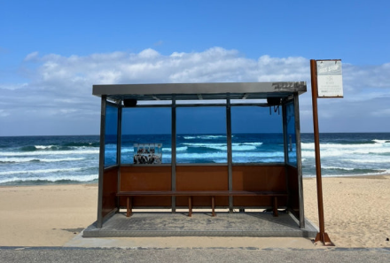
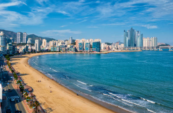
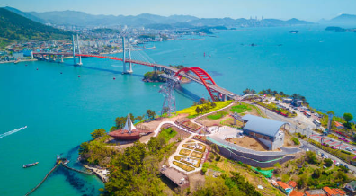
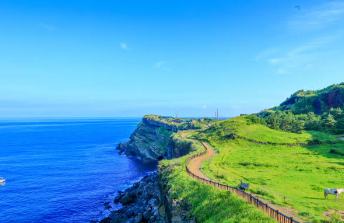

인천
서해안에 있으며 조석간만의 차는 대체로 9~10m에 이르는데, 이는 세계에서 3번째로 큰 차이다.
갯벌이 발달되어 있다.
유명한 해변
- 을왕리 해수욕장: 서울에서 가장 가까운 섬 용유도에 1986년 국민관광지로 개발된 해변으로, 수심이 깊지 않아 가족 단위나 청소년 단체수련을 위한 장소로 많이 이용됩니다.
- 선녀바위 해수욕장: 바다가 탁 트이고 다른 해수욕장보다 상대적으로 조용하고 차분한 분위기이다. 용유 3경 선녀바위를 보고, 일몰 시각을 맞추어 아름다운 낙조도 함께 감상하기에 좋은 해수욕장이다.
서식 물고기
대표적인 서식 물고기로는 숭어, 우럭, 광어등이 있다.
강릉

동해안에 있으며, 깨끗한 바다와 풍부한 해양 생물들이 서식하는 곳입니다.
유명한 해변
- 경포해변: 동해안의 최대 해변으로, 주위에 소나무숲이 우거져있다.
- 주문진 해수욕장: 고운 모래의 백사장, 매년 오징어 축제가 열린다. 넓은 백사장과 수심이 얕고 바닷물이 맑아 가족 단위를 위한 장소로 많이 이용됩니다.
서식 물고기
대표적인 서식 물고기로는 고등어, 오징어, 방어등이 있다.
부산

부산은 동해안에 있으며, 맑고 푸른 바다와 기분 좋은 파도가 특징이다.
유명한 해변
- 광안리 해수욕장: 맑고 푸른 바다와 고운 모래를 가지고 있으며, 광안대교와 바다가 어우러지는 경치가 아름다워 야경 명소로도 유명하다.
- 해운대 해수욕장: 수심이 얕고 조수의 변화도 심하지 않아 해수욕장으로서의 조건이 좋다. 해마다 피서객으로 몰리기도 한다.
서식 물고기
대표적인 서식 물고기로는 고등어, 멸치, 민어등이 있다.
여수

여수는 남해안에 있으며, 파도가 잔잔하고 따뜻한 해류가 흐른다.
유명한 해변
- 만성리 검은모래해변: 보기 드문 검은 모래해변, 모래찜질로 유명한데 신경통과 각종 부인병에 효험이 있는 것으로 알려져 있다.
- 모사금 해수욕장: 고운 모래사장과 갯돌밭으로 나누어져 있다. 주변 경관이 아름답고 한적하여 가족 단위 많이 이용, 사계절 바다낚시를 할 수 있는 낚시터와 청소년들의 수련장으로도 활용된다.
서식 물고기
대표적인 서식 물고기로는 참돔, 갑오징어, 장어등이 있다.
제주

제주는 맑고 청정하며 매년 여름마다 관광객들로 붐빈다.
유명한 해변
- 협재 해수욕장: 조개껍질이 많이 섞인 은모래가 펼쳐지는데, 수심이 얕고 경사가 완만하기 때문에 수영 초보자에게도 알맞은 해수욕장이다.
- 김녕 해수욕장: 코발트블루의 물빛과 은모래가 펼쳐져 있다. 주변에 만장굴이 있어 코스로 많이 다닌다.
서식 물고기
대표적인 서식 물고기로는 갈치, 자리돔, 방어등이 있다.